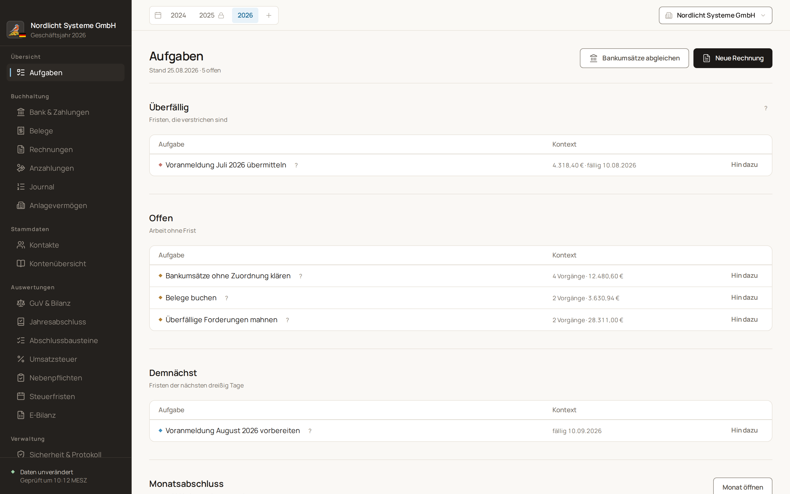

Buchhaltung für kleine bilanzierende Unternehmen.
Buchfink führt die doppelte Buchführung nach SKR04 und den Jahresabschluss einer kleinen Kapitalgesellschaft. Das Programm läuft auf dem eigenen Rechner; die Buchhaltung liegt als Datei im eigenen Datenordner. Es ist für Menschen gebaut, die keine Buchhaltung gelernt haben: die Oberfläche spricht in Vorgängen, und eine Aufgabenliste sagt, was heute zu tun ist.
Buchfink ist kostenlos und quelloffen, und es gibt keine Cloud — nichts wird an einen Server übertragen.
{kind=link}

Für wen
Ein enger Anwendungsbereich
Buchfink ist auf einen Fall zugeschnitten: das kleine Unternehmen, das eine Bilanz aufstellt. Was daneben liegt, bildet es nicht ab und wird es auch nicht abbilden.
Gebaut für
UG, GmbH und AG, auch in Gründung. GmbH & Co. KG, KG und OHG. Bilanzierende Einzelunternehmen und eingetragene Kaufleute. Ein Rechner, eine Bearbeiterin.
Nicht gebaut für
Keine Einnahmen-Überschuss-Rechnung: Buchfink kennt nur die doppelte Buchführung. Keine Lohnbuchhaltung; der Lohn kommt als Sammelbuchung aus dem Lohnjournal. Kein Kassenbuch, kein Lager.
Kein Ersatz für die Steuerberatung
Kontierung, Steuerfall und Jahresabschluss bleiben Entscheidungen des Unternehmens. Buchfink rechnet, prüft und protokolliert; es übernimmt keine Verantwortung für das Ergebnis.
Grundprinzipien
Sechs Entscheidungen, die jede Funktion prägen
Local-First
Alle Daten liegen in einem Ordner auf dem Rechner: eine SQLite-Datei je Mandant, daneben die Belege. Sicherung und Wiederherstellung gehören zum Programm.
Die Buchung folgt dem Bankumsatz
Der Alltag beginnt beim Kontoauszug. Eine Zahlung wird ihrem offenen Posten oder ihrem Beleg zugeordnet; Buchungssatz und Steuer rechnet Buchfink daraus.
Keine Buchung ohne Beleg
Der Beleg wird abgelegt, wie er ankam, unter seinem eigenen SHA256. Erst danach entsteht die Buchung, und der Weg von der Bilanz zurück zum Beleg ist begehbar.
GoBD mit Hashkette und Festschreibung
Jede Buchung trägt den Hash ihrer Vorgängerin, das Änderungsprotokoll eine zweite Kette. Ein Zeitraum wird festgeschrieben und mit einem RFC-3161-Zeitstempel beglaubigt; korrigiert wird per Storno.
Vorgangssprache statt Paragraphen
Ein Bankumsatz heißt „Geld erhalten“, eine Abgrenzung „Kosten, die ins nächste Jahr gehören“. Die Norm steht hinter dem Erklärzeichen; der Buchungssatz mit Soll und Haben steht in jeder Vorschau und im Journal.
Kostenlos und quelloffen
Kein Kaufpreis, kein Abo, keine Nutzerlizenz. Der Quellcode steht unter der EUPL-1.2 und lässt sich prüfen, anpassen und weitergeben.
Der Jahreslauf
Das Rückgrat der Bedienung
Die Frage jeder Ansicht lautet: Was ist heute zu tun, und woran ist zu erkennen, dass es erledigt ist? Daraus entsteht ein Kreis aus drei Takten. Der tägliche füllt das Journal, der monatliche schließt es ab und meldet, der jährliche stellt den Abschluss auf und trägt vor — und danach beginnt der tägliche von vorn.
Das Schaubild lässt sich seitlich schieben.
Weiterlesen
Was die Anwendung tut
Vier Seiten beschreiben die Funktionen mit Bildern aus der laufenden Oberfläche. Was gebaut ist und was bis zur Version 1 noch aussteht, steht auf der Roadmap.
Bank und Zahlungen, Belege, Journal, Ausgangsrechnungen und Anzahlungen.
Voranmeldung, Zusammenfassende Meldung, Fristen und steuerliche Nebenpflichten.
Monatsabschluss, Abschlussbausteine, Bilanz und GuV, E-Bilanz.
Protokoll, Aufbewahrung, Sicherung, Prüferpaket und Verfahrensdokumentation.
Was steht, was bis v1 offen ist, und welche Prüfpunkte ein Datum haben.
Voraussetzungen, Bauen, Starten, Datenordner und Sicherung — und wie man mitwirkt.
Buchfink ist vor der ersten Erprobung
Alle Funktionen der laufenden Buchhaltung und des Jahresabschlusses sind gebaut. Anwender gibt es noch keine, und die Version 1 steht aus. Wer Buchfink heute einsetzt, prüft die Ergebnisse selbst und sichert seine Daten. Was trägt, wo eine Funktion an ihrer Grenze endet und was fehlt, steht in Stand der Umsetzung und auf der Roadmap.